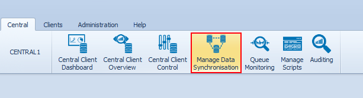
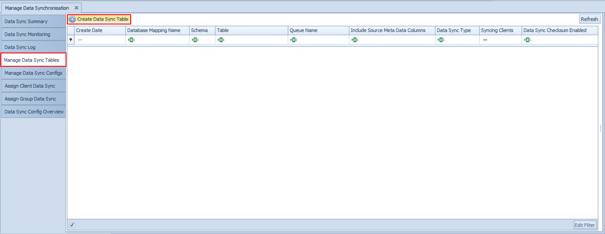
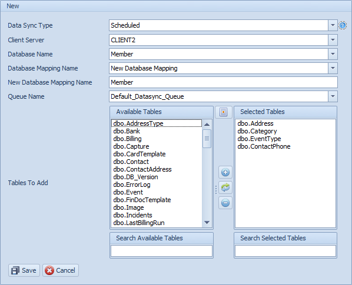
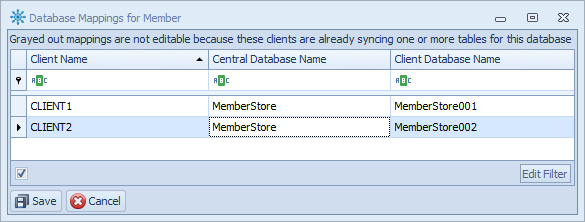
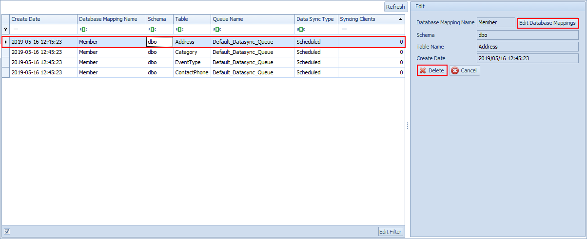

Manage Data Synchronisation Tables
To set up a Data Synchronisation process, select the Manage Data Synchronisation button on the Central ribbon tab on the Conductor4SQL user interface.

Consolidation Sync
When using consolidation data synchronisation, before any Data Synchronisation can take place, the table structure of all the tables you want to synchronise must match across all the clients. You should make use of the metadata comparison feature to achieve this.
Before you can start synchronising, you must define the table metadata for the tables that will potentially be synchronised. There are a number of rules to be followed for consolidation data synchronisation to work correctly:
- Each database in only added once. Database mapping is required if database names are different from client to client.
- Table names must be identical as there is no table mapping option at this point in time
- Data types of all primary key columns must be identical
- Data types of all remaining columns (non primary key) data types must match, however, different column data sizes is supported e.g. if two clients have a column where the data type is VARCHAR(10) at the one and VARCHAR(20) at the other, the consolidated data will just use the larger of the two. However if the data type is Datetime at the one client and INT at another client, this will result in an error.
- Conductor4SQL does allow additional columns in tables when using consolidation sync. Additional columns will be added as needed. Columns that don't exist at other clients as simply NULL
One-to-One sync
When using one-to-one data synchronisation, you must define the table metadata for each client, database and table that you want to sync.
Adding Table Definitions
Select the Manage Data Sync Tables tab, then click on the Create Data Sync Table button

Fill in all information in the screen below:

- Data Sync Type - the options are: Scheduled, Enterprise, Once-Off and Real-Time.
- Client Server - Select the client that you wish to capture the table definitions from.
- Database Name - The name of the database at the client to sync
- Database Mapping Name - Select an existing database mapping name to add the tables to. Select New Database Mapping if the desired mapping doesn't exist.
- New Database Mapping Name - The name of new database mapping name to create
- Queue Name - The data sync queue to use for syncing the selected tables
- Tables to Add - All tables that are in the database that have not been added to the database mapping name. Add the tables that you would like to create definitions for.
Click Save to confirm the selection or click Cancel to abort.
During the Save process, various checks are performed by Conductor4SQL:
- Firstly Conductor4SQL checks that the table pre-requisites have been met (table has a primary key and warns of unsupported data types). If the checks are successful then Conductor4SQL will create the table definition.
- Important: Two additional columns will be inserted on the Central ClientID and C4SqlClientDatabaseName to enable the specific data of each client to be uniquely identified.
Once the table definitions have been saved, a new window will pop up where the user can fill in the database mappings for each client

Make sure that you click on the Save button otherwise your mappings will be discarded
Editing Table Definitions
Tables that are already defined are displayed in the panel on the left. Click on any one of the entries to view the synchronisation properties in the panel on the right.

You can edit the Database Mappings for any table by selecting the table and then clicking on the Edit Database Mappings button.
You can also delete a table definition by selecting the Delete button.
Note
you can only delete a definition if no clients are syncing this table definition.